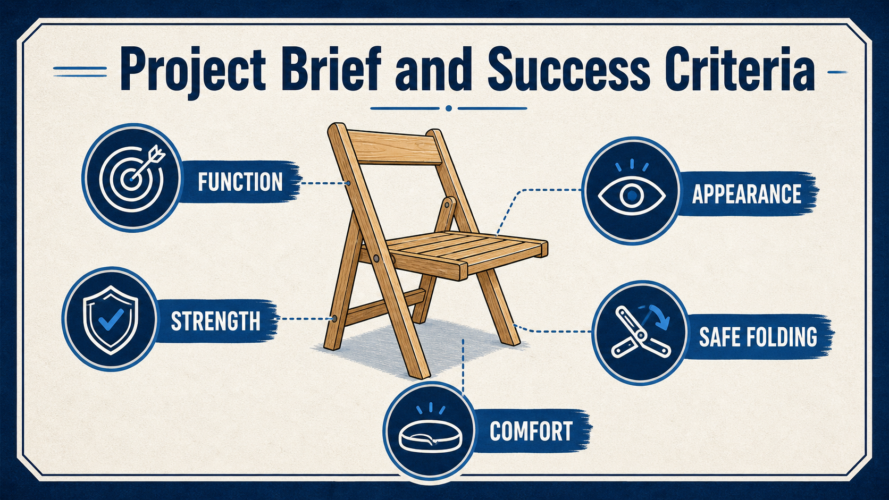
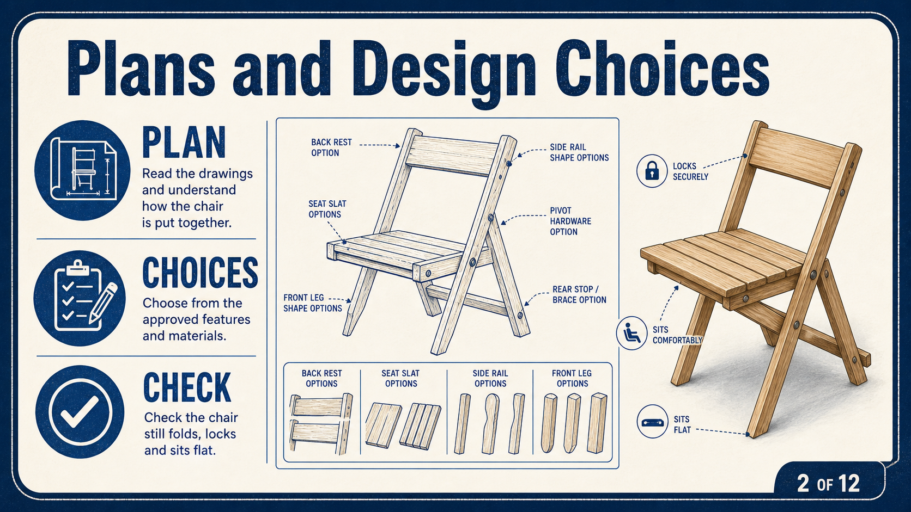
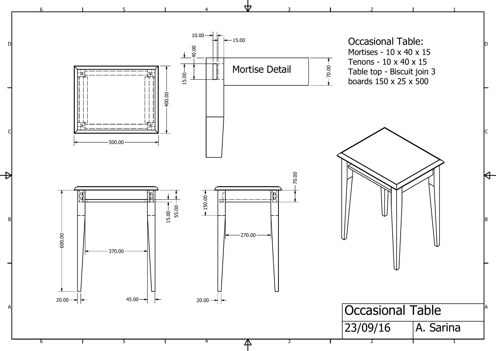
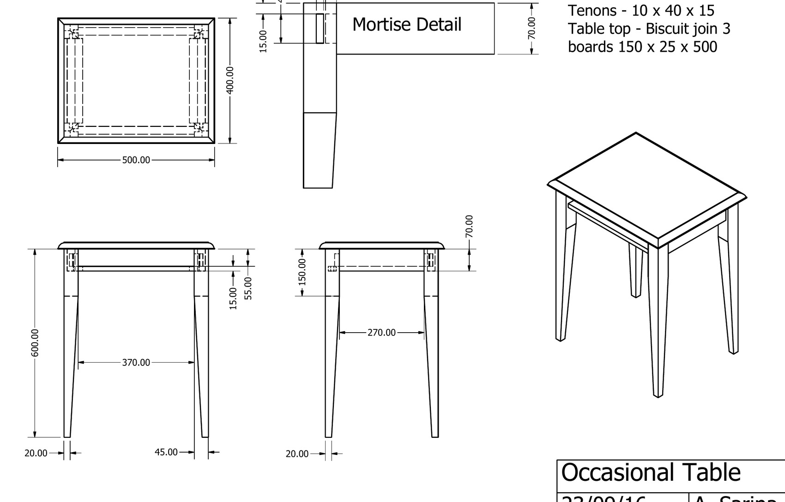

Function
The table supports normal bedside items and any approved storage feature operates reliably.
Industrial Technology – Timber
Weeks 1–2: Project brief, plans, WHS, design and accurate mark-out

Your work
Your entries save automatically in this browser. Use Print / Save PDF before leaving the page.
Weeks 1–2
Understand the bedside-table project before any timber is cut.
Theory 1

The project brief is to design and manufacture a timber bedside table that is stable, functional, accurately made and suitable for everyday use. The finished table should safely support common bedside items, such as a lamp, book or phone, while fitting the intended style and purpose. Success depends on more than appearance.
Components must be marked out carefully, cut to the planned shape, joined securely and assembled square. Edges should be smooth, surfaces evenly prepared and the finish applied without runs, missed areas or heavy sanding scratches. Drawers, shelves or other features included in the approved design must operate correctly and align neatly.
Throughout construction, check measurements against the working drawing before cutting, label parts to prevent mix-ups and complete dry fits before using adhesive. Final quality checks should include stability on a flat surface, consistent gaps, flush joints, safe edges and a finish that protects the timber. A successful project matches the approved design and shows careful workmanship.
The table supports normal bedside items and any approved storage feature operates reliably.
The four tapered legs stand firmly, the frame resists racking and the top does not rock.
Joints close neatly, matching parts align and the table follows the approved drawing.
Surfaces are smooth, safe to touch and protected by the teacher-approved finish system.
Theory 2


The approved working drawing is the main guide for building the bedside table. Read all views carefully before marking timber so you understand how the tapered legs, shaped front apron, rails, top and drawer area relate to one another. Use the drawing to identify each part, its position, orientation and finished shape.
Pay close attention to front, side and plan views because one view may show information that is not clear in another. Check which faces and edges will be visible, which parts must match as pairs and where tapers or shaped sections begin and finish. Mark components from a consistent reference face and reference edge so small errors do not build up across the project.
Plan a sensible construction sequence before cutting, including timber preparation, marking, shaping, joinery, dry fitting, drawer fitting and final assembly. Recheck each part against the drawing before removing material. Once timber is cut away, it cannot be put back.
Confirm the project, units and any instructions that apply to the whole drawing.
Use front, side, plan and detail views together rather than relying on one picture.
Follow extension lines to the actual surfaces, centres or ends being controlled.
Confirm front, rear, left, right, face side and visible surfaces before marking.
Prepare, mark, machine, dry fit and inspect in an order that preserves correction options.
Theory 3
The table works as a connected frame. The top spreads the load, the rails and apron transfer it into the legs, and the joints keep the frame from twisting or racking.
The top is not the frame. A thick top may look strong, but the table still depends on accurate leg-and-rail connections underneath. Loose shoulders, reversed tapers or a racked frame can make the project unstable even when the top is flat.
The broad curved front apron has two jobs. It contributes to the visual identity of the project and connects the front legs. Shaping must not remove so much material that the remaining section or nearby joint is weakened.
Supports use loads and must be centred, secure and allowed to move as specified.
Tie the legs together and resist side-to-side movement and racking.
Transfer load through close-fitting shoulders, cheeks and glued long-grain surfaces.
Carry load to the floor while remaining matched in orientation, length and shape.
Theory 4

Building a tapered-leg bedside table involves hazards during marking, cutting, sanding and assembly. Keep the work area clear, wear enclosed shoes and eye protection, and secure loose hair, clothing and jewellery before using tools or machinery. During marking, support long timber fully and keep sharp pencils, marking knives and squares under control to avoid slips.
Tapered legs must be marked from clear reference faces so waste is removed from the correct side. Before cutting, inspect timber for defects, confirm the machine guard and extraction are operating, and keep hands outside the cutting zone. Use push sticks, fences and clamps where required, and never remove offcuts while a blade is moving.
Sanding creates fine dust, so use extraction and a suitable dust mask, and keep fingers clear of moving abrasives. During dry fitting and assembly, clamp components securely, wipe excess adhesive promptly and avoid over-tightening, which can distort the frame or drawer opening. Check stability before releasing clamps or moving the project.

Protects against chips and dust but does not replace guards, clamps or correct technique.

Clamps keep components controlled during drilling, routing, dry fitting and assembly.

Remove or isolate hazards where possible before relying on rules and PPE.
Use the approved hearing protection for machinery identified by workshop procedures.
Theory 5
Design decisions must improve the complete project rather than one feature in isolation. The strongest option balances function, stability, appearance, manufacture, safety, time and material use.
Separate fixed requirements from approved choices. The project type, main structure and required construction details come from the brief and drawing. A profile, handle or storage feature may be varied only where the teacher has approved that choice and the change does not weaken a joint, interfere with movement or create unnecessary work.
Sketch to test an idea. A useful sketch shows proportion, component relationships and likely manufacturing consequences. Add notes explaining what changes, why it is suitable and which criteria were considered. A decorative idea that adds risk, weak short grain or difficult machining without improving the brief is not a strong design decision.
Will the table support normal use and allow any approved storage feature to work?
Does the change preserve sound grain, joint area and frame stiffness?
Can it be produced accurately with available tools, time and student skill?
Does it suit the slim tapered-leg form without adding clutter or imbalance?
Theory 6

A datum is a fixed reference face, edge or point from which related measurements are taken. Using the same reliable reference prevents small differences from accumulating across the four legs, rails and joint locations.
Establish face side and face edge first. Mark one flat face and one straight adjacent edge on each prepared component. Place the square against those references, not against a rough or unverified surface. Measure repeated joint positions from one common end rather than chaining one measurement from the next.
Treat matching parts as a set. Pair the legs, align the rails and label each component by location. Mark tapers, curves, mortises, tenons and waste sides while the parts are compared directly. This prevents two left-hand components, reversed tapers and joint lines that do not align.

Confirm the face side, face edge and datum end are straight, square and clearly marked.
Take related lengths and joint positions from the same datum rather than chaining errors.
Use a sharp pencil or marking tool and show the waste side clearly.
Compare left/right and front/rear parts in their assembled orientation.
Return to the drawing, confirm the component and obtain any required teacher check.
Guided practice
Choose an answer, check it and use the feedback to improve. After an incorrect attempt, the hint becomes more specific without simply giving the answer away.
Apply your learning
Use the sentence starters, write your own answer first, then check the guidance and compare with the appropriate response example.
Finish the two-week block
Your answers save in this browser as you work, but browser storage is not the official submission. Save the completed page as a PDF before closing it.
No marks, answers or personal information are sent from this webpage.